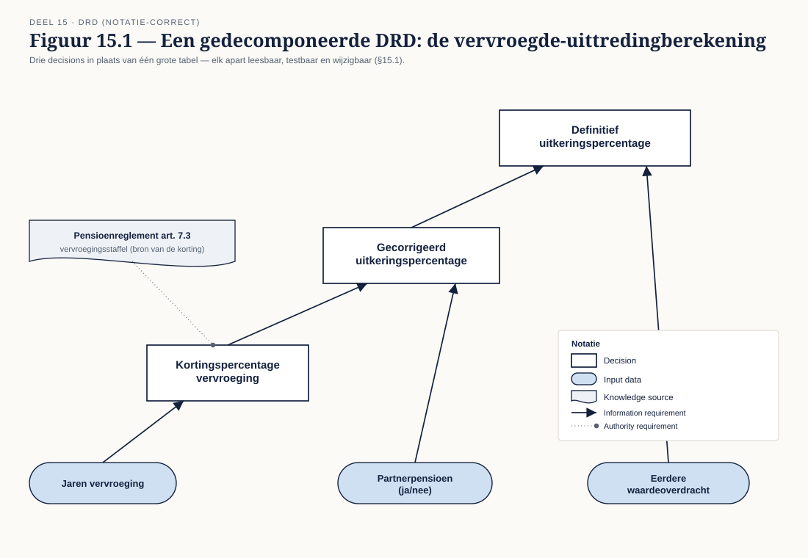
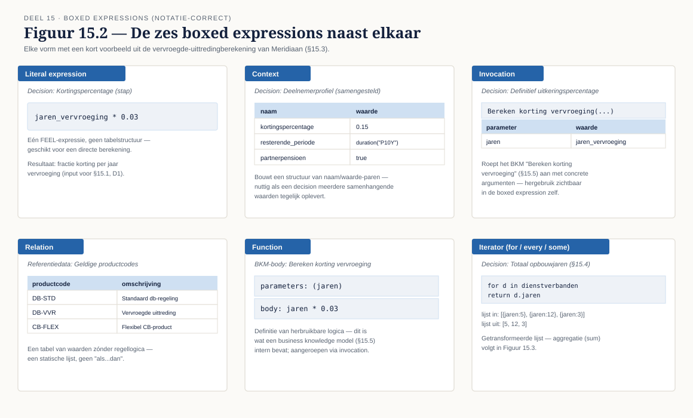
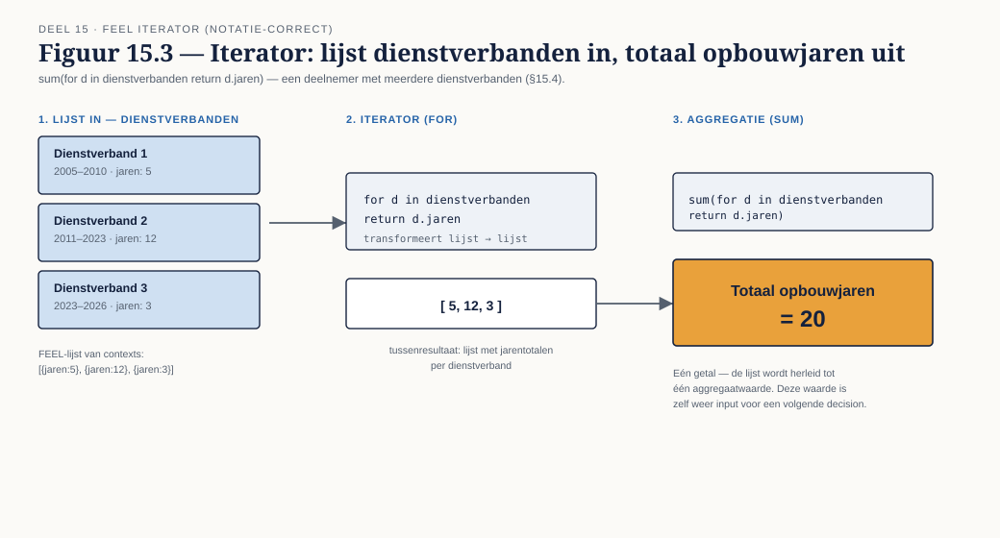

Deel 15 — DMN gevorderd
Reader · Ductus-cursus BPMN, CMMN & DMN · niveau 2 (praktijk) · deel 15 van 30 · studielast ± 8 uur
Dit materiaal bereidt voor op DMN Method & Style (Bruce Silver / Trisotech) en op het DMN-onderdeel van het BPM+ Certificate. Het is geen vervanging van het officiële examen- of trainingsmateriaal.
Indeling over twee dagdelen. Dagdeel 1 behandelt §15.1 tot en met §15.5 (decompositie, FEEL, boxed expressions, iterators, business knowledge models). Dagdeel 2 behandelt §15.6 en §15.7 (tabelanalyse en testen). Dit is het zwaarste deel van niveau 2 — de zelfstudiecomponent is hier het grootst.
Leerdoelen
Na dit deel kun je:
- Beslismodellen decomponeren en beargumenteren waar je splitst.
- FEEL toepassen op praktijkniveau: types, contexts, lists, ranges, temporele expressies, functies.
- Boxed expressions kiezen en toepassen: literal, context, invocation, relation, function, iterator.
- Business knowledge models ontwerpen voor hergebruik.
- Beslistabellen analyseren op volledigheid, overlap, subsumptie en onbereikbare regels.
- Beslismodellen testen met testsets en dekkingsgraad.
# Dagdeel 1
15.1 Decompositie
Niveau 1, deel 6 behandelde één decision met één beslistabel. In de praktijk groeit een beslismodel al snel voorbij wat in één tabel leesbaar blijft, en dan moet je decomponeren: één grote beslissing opsplitsen in meerdere, kleinere, elk met een eigen tabel, verbonden in een DRD.
Signalen dat een tabel te groot wordt. Meer dan vijf tot zeven inputkolommen, regels die zichtbaar in groepen uiteenvallen (bijvoorbeeld: een blok regels dat alleen relevant is als één specifieke inputwaarde een bepaalde waarde heeft), of een tabel waarvan de auteur zelf de volledigheid niet meer kan overzien — dat laatste is het duidelijkste signaal, en precies het probleem dat niveau 1, deel 6, §6.5 al aanstipte.
De DRD als architectuur, niet als plaatje. Een gedecomponeerd beslismodel toont in de DRD zelf de opbouw van de redenering: een tussenliggende decision (bijvoorbeeld "korting voor vervroeging") die zelf weer input is voor een eindbeslissing ("definitief uitkeringspercentage"). Dit is geen esthetische keuze — het bepaalt welk deel van de logica je apart kunt hergebruiken, apart kunt testen (§15.7), en apart kunt laten wijzigen zonder de rest te raken (het regelbeheer-vraagstuk van deel 16).
Casusfragment — Programma Mutatieplatform De rekenregels voor vervroegde uittreding (bekend uit de niveau 1-capstone) combineren drie factoren: jaren vervroeging, partnerpensioen, eerdere waardeoverdracht. Een enkele tabel met alle drie als inputkolommen zou werken voor kleine aantallen jaren, maar wordt bij een fijnmazige staffeling van kortingspercentages al snel tientallen regels. Decompositie in een tussenliggende decision "kortingspercentage vervroeging" (alleen afhankelijk van jaren) en een eindbeslissing die dat percentage combineert met de andere twee factoren, houdt beide tabellen overzichtelijk en maakt de eerste herbruikbaar voor andere producten die dezelfde vervroegingsstaffel hanteren.
15.2 FEEL diepgaand
Niveau 1, deel 6, §6.6 introduceerde de basis. Op praktijkniveau komt daar het volgende bij:
- Types en type-conversie — FEEL kent number, string, boolean, date, time, date and time, duration, en de collectietypen list en context. Conversiefuncties (`string()`, `number()`, `date()`) zijn nodig zodra data uit verschillende bronnen (bijvoorbeeld een systeemveld dat als tekst binnenkomt) samen moeten worden vergeleken.
- Contexts — een verzameling naam-waardeparen, vergelijkbaar met een object: `{ leeftijd: 45, actief: true }`. Contexts zijn de basis van de boxed expression van hetzelfde type (§15.3) en worden gebruikt om samengestelde gegevens te structureren.
- Lists — een geordende verzameling waarden: `[1, 2, 3]` of een lijst van contexts (bijvoorbeeld: alle dienstverbanden van een deelnemer). Lists zijn de basis voor iteratie (§15.4).
- Temporele expressies — cruciaal in een pensioencontext. `date("2026-01-01")`, `duration("P5Y")` (een periode van vijf jaar), en berekeningen daartussen: `date("2026-01-01") - date("2021-01-01")` levert een duration op. Peildatums, ingangsdatums en de vraag "hoeveel jaar zit er tussen twee datums" komen in vrijwel elke pensioenberekening terug.
- Ingebouwde functies — een uitgebreide bibliotheek voor tekst (`substring`, `upper case`), lijsten (`count`, `sum`, `sort`), en datums (`year`, `month of`, `date and time`). Ken de meest gebruikte functies uit het hoofd; de rest zoek je op wanneer nodig.
15.3 Boxed expressions
Een beslistabel (niveau 1, deel 6) is één van zes vormen waarin je de logica van een decision kunt uitdrukken — een boxed expression. De andere vijf:
- Literal expression — een enkele FEEL-expressie, zonder tabelstructuur. Geschikt voor eenvoudige berekeningen die geen regels nodig hebben: `jaren_vervroeging * 0.03`.
- Context — een boxed expression die zelf een context opbouwt, met per regel een naam en een sub-expressie. Geschikt wanneer een decision meerdere samenhangende waarden tegelijk moet opleveren.
- Invocation — een aanroep van een business knowledge model (§15.5) met concrete argumenten. Dit is de vorm die hergebruik zichtbaar maakt in de boxed expression zelf.
- Relation — een tabel van waarden zonder regellogica — puur een gestructureerde verzameling data, vergelijkbaar met een kleine, statische tabel (bijvoorbeeld: een lijst van geldige productcodes met hun omschrijving).
- Function — de definitie van een herbruikbare functie, met parameters en een body-expressie; dit is wat een business knowledge model intern bevat.
- Iterator (for/every/some) — behandeld in §15.4.
Wanneer een beslistabel niet meer de juiste vorm is. Zodra de logica geen "als deze combinatie van condities, dan die uitkomst"-structuur heeft — bijvoorbeeld een directe berekening, of een aanroep van eerder gedefinieerde logica — is een andere boxed expression passender. Het forceren van elke decision in tabelvorm, ook waar dat niet past, is een stijlfout die de leesbaarheid schaadt, vergelijkbaar met het forceren van elke beslissing in een BPMN-gateway (niveau 1, deel 3, §3.5).
15.4 Iterators
FEEL kent drie iteratorvormen om met lijsten te werken:
- for — transformeert elk element van een lijst tot een nieuwe lijst: `for d in dienstverbanden return d.jaren` levert een lijst van jarentotalen op.
- every — controleert of een voorwaarde voor élk element geldt: `every d in dienstverbanden satisfies d.actief` levert `true` of `false` op.
- some — controleert of een voorwaarde voor ten minste één element geldt: `some d in dienstverbanden satisfies d.type = "overdracht"`.
Werken met lijsten in de praktijk. Het totaal aantal opbouwjaren van een deelnemer met meerdere dienstverbanden is een klassiek voorbeeld: `sum(for d in dienstverbanden return d.jaren)` combineert een for-iterator met de ingebouwde functie `sum`. Dit soort constructie komt terug zodra een beslissing niet op één simpel gegeven werkt, maar op een verzameling — en die verzameling qua lengte per deelnemer verschilt, wat een vaste beslistabel onmogelijk zou maken.
15.5 Business knowledge models
Een business knowledge model (BKM, geïntroduceerd in niveau 1, deel 6, §6.2) is herbruikbare logica — in essentie een functie — die door meerdere decisions kan worden aangeroepen via een invocation (§15.3).
Granulariteit. Een BKM voor "bereken kortingspercentage bij vervroeging" is herbruikbaar en behapbaar. Een BKM die de hele uitkeringsberekening in één keer doet, is eigenlijk gewoon de hoofddecision met een andere naam — geen echt hergebruik. De vuistregel: een BKM verdient zijn bestaan als hij door minstens twee verschillende decisions wordt (of redelijkerwijs zal worden) aangeroepen, of als hij een stuk logica isoleert dat een eigen, apart te wijzigen levenscyclus heeft (bijvoorbeeld: een wettelijk vastgestelde staffel die jaarlijks wijzigt, los van de rest van de berekening).
Het risico van te fijnmazig hergebruik. Een BKM voor elke afzonderlijke rekenstap, ook waar die maar op één plek wordt gebruikt, versplintert het beslismodel in een web van aanroepen dat moeilijker te doorzien is dan één iets grotere, samenhangende decision. Hergebruik is een middel, geen doel op zich — dezelfde afweging die niveau 1, deel 4, §4.5 al maakte voor BPMN-subprocessen, hier toegepast op DMN.
# Dagdeel 2
15.6 Analyse van tabellen
Niveau 1, deel 6, §6.5 introduceerde volledigheid, consistentie en overlap. Op dit niveau komen twee begrippen bij die pas relevant worden bij grotere, gedecomponeerde tabellen:
- Subsumptie — een regel die volledig "opgeslokt" wordt door een andere, bredere regel, waardoor hij feitelijk nooit het verschil maakt. Bijvoorbeeld: een regel voor "leeftijd > 65" en een andere regel voor "leeftijd > 60 en leeftijd < 70" kunnen elkaar overlappen op een manier die niet meteen zichtbaar is zonder de ranges naast elkaar te leggen.
- Onbereikbare regels — een regel die door de volgorde van eerdere regels (bij een hit policy als First) nooit aan de beurt komt, ook al is hij op zichzelf geldig. Dit is een fout die alleen optreedt bij volgorde-afhankelijke hit policies en die des te sluipender is omdat de tabel er op het eerste gezicht compleet correct uitziet.
Wat een tool detecteert en wat niet. De meeste DMN-tools detecteren overlap bij een Unique-tabel automatisch (het is een structurele fout). Subsumptie en onbereikbare regels zijn subtieler: sommige tools signaleren ze, andere niet — en zelfs waar een tool het signaleert, blijft de vraag of de subsumptie een bewuste vereenvoudiging is (de bredere regel was zo bedoeld) of een fout (de bredere regel verbergt per ongeluk een uitzondering die had moeten gelden). Dat onderscheid maken vergt een mens die de businessbetekenis kent, niet alleen een tool die de logica ontleedt.
15.7 Testen
Een beslismodel dat nooit getest is, is een aanname met een mooie tabel eromheen. Testen bij DMN is, net als bij elke andere logica, een deliverable op zich — niet iets dat je "erbij doet" als er tijd over is.
Testsets opstellen. Voor elke decision: een set testgevallen met concrete inputwaarden en de verwachte uitkomst. Een goede testset dekt niet alleen de duidelijke gevallen (elke regel minstens één keer geraakt) maar ook de randen (grenswaarden van ranges, bijvoorbeeld precies op de leeftijdsgrens) en de combinaties die het meest foutgevoelig zijn gebleken bij de tabelanalyse uit §15.6.
Dekkingsgraad bepalen. Hoeveel van de regels in de tabel worden daadwerkelijk geraakt door minstens één testgeval? Een testset die drie van de tien regels nooit test, laat een deel van het beslismodel feitelijk ongevalideerd — een parallel met codedekkingsmetrieken in softwaretesten, hier toegepast op beslislogica.
Regressie bij regelwijziging. Wanneer een tabel wijzigt (bijvoorbeeld: de kortingsstaffel wordt per 1 januari aangepast — direct gekoppeld aan het regelbeheervraagstuk van deel 16), draai je de bestaande testset opnieuw: welke testgevallen leveren nu een andere uitkomst op, en is dat de bedoelde wijziging of een onbedoelde neveneffect? Testen zonder deze regressiestap laat de vraag "heb ik alleen veranderd wat ik wilde veranderen" onbeantwoord.
Kernbegrippen
Decompositie — het opsplitsen van een grote beslissing in kleinere, verbonden decisions · Type / context / list — de FEEL-datatypen · Boxed expression — de zes vormen waarin decisielogica wordt uitgedrukt (decision table, literal, context, invocation, relation, function, iterator) · for / every / some — de drie FEEL-iteratorvormen · Business knowledge model (BKM) — herbruikbare logica, aangeroepen via invocation · Subsumptie — een regel die volledig wordt opgeslokt door een bredere regel · Onbereikbare regel — een regel die door tabelvolgorde nooit aan de beurt komt · Testset / dekkingsgraad / regressie — de drie bouwstenen van beslismodeltesten
Examenrelevantie
Dit deel is de directe voorbereiding op DMN Method & Style, waar modellen beoordeeld worden op basis van daadwerkelijk ingediend werk in plaats van meerkeuzevragen. Ook relevant voor het DMN-onderdeel van BPM+.
Leeswijzer
Raadpleeg de actuele DMN-specificatie voor de volledige FEEL-grammatica en de volledige lijst ingebouwde functies — dit deel behandelt de meest gebruikte constructies, niet de complete taal. Voor Method & Style: de officiële cursusmaterialen van Bruce Silver / Trisotech behandelen de beoordelingscriteria in detail.
Figurenlijst


